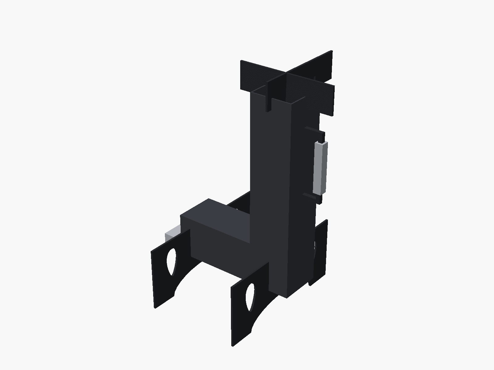
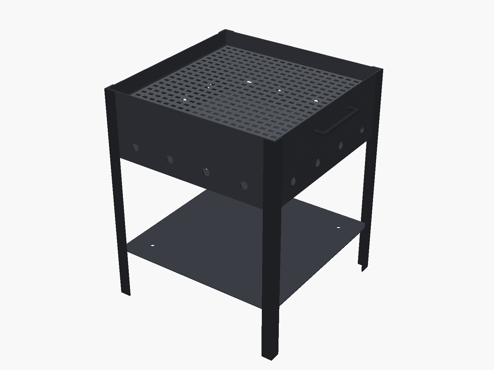
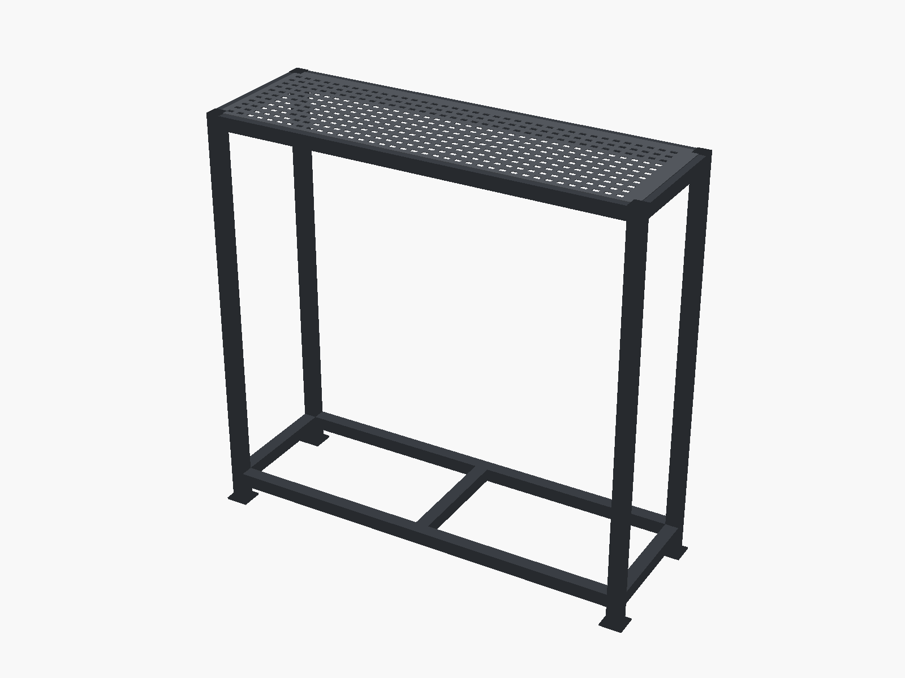
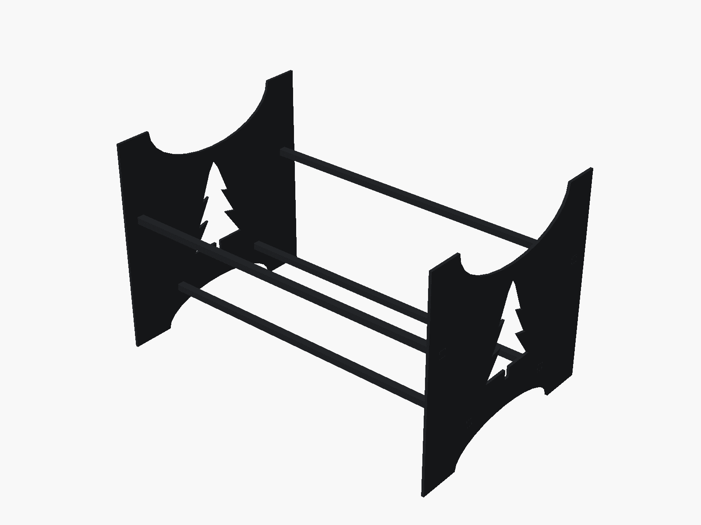
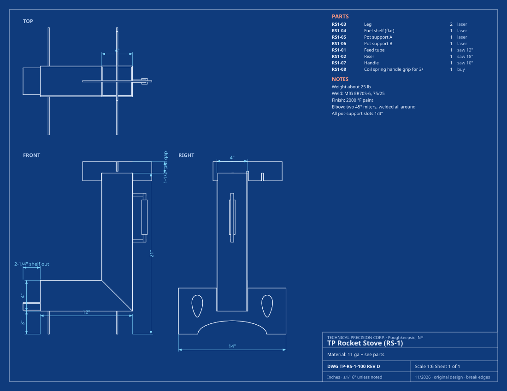
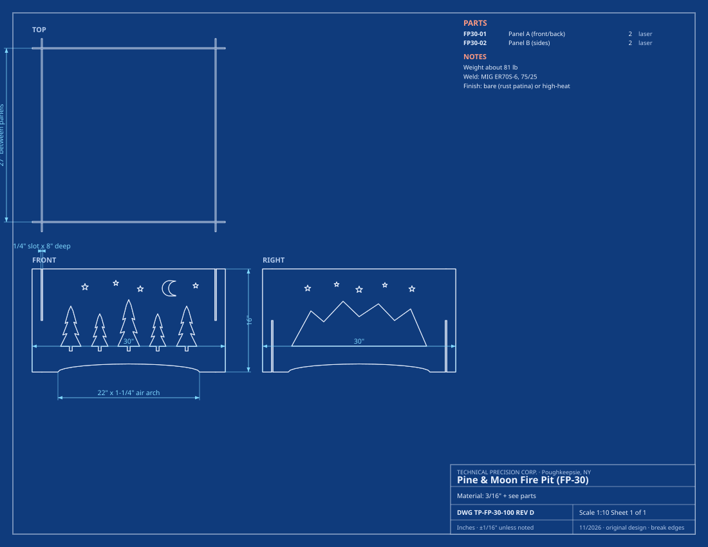
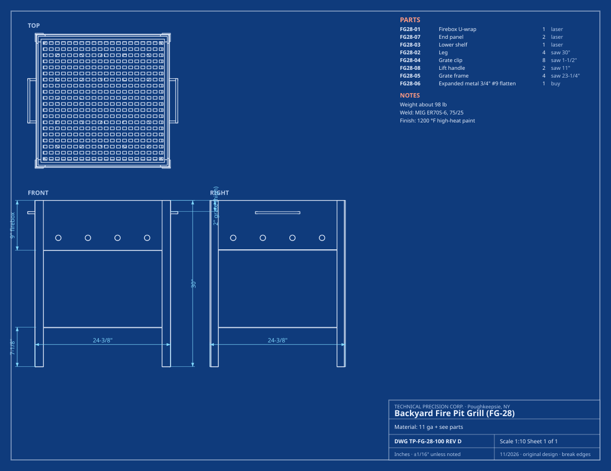
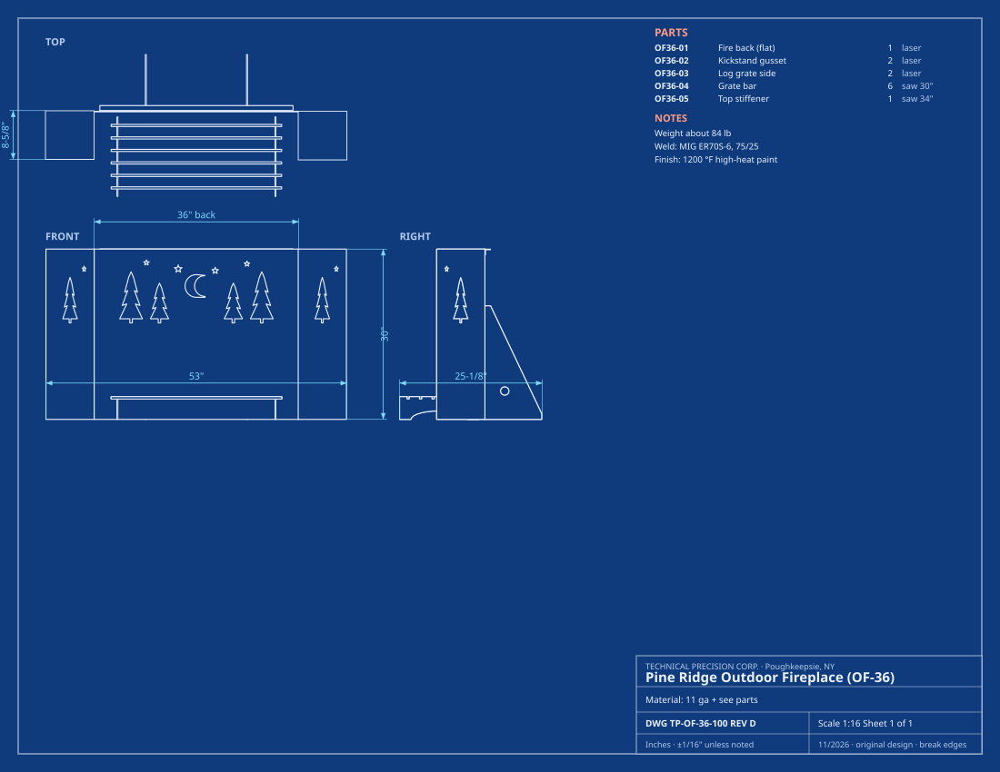
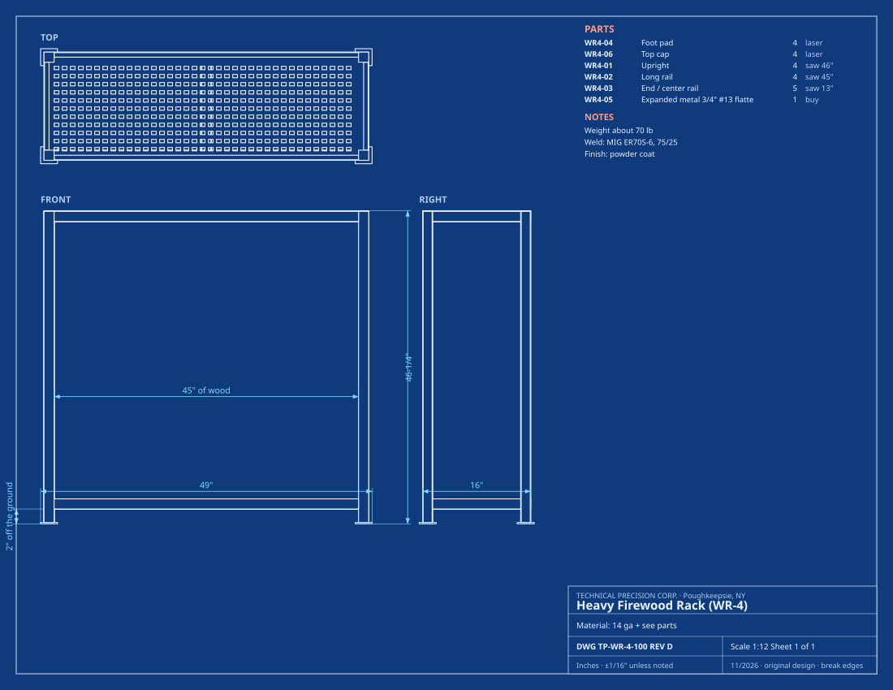
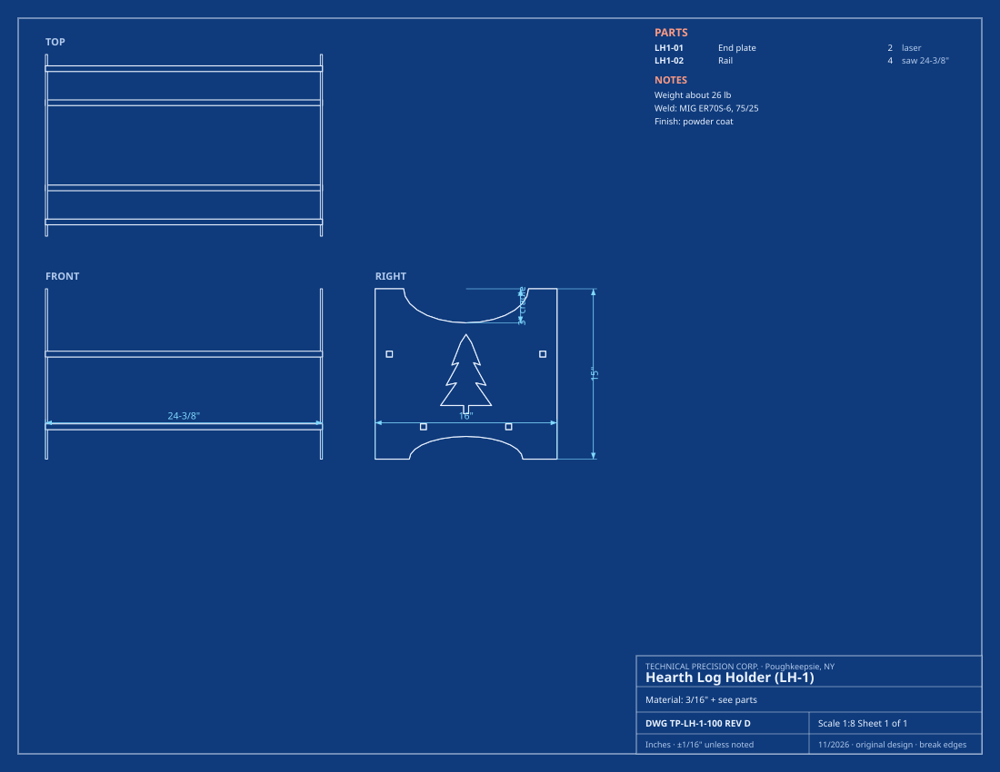

New · Outdoor fire & firewood
Steel for the fire,
made in Poughkeepsie.
Fire pits, a rocket stove, a fire pit grill, an outdoor fireplace and firewood racks, cut on our laser and welded in our shop from heavy plate, not the thin stuff from the big stores. Every piece is made to order. We deliver around Poughkeepsie in the shop truck.

Cooking · RS-1TP Rocket StoveCook a full meal on a handful of sticks.$169 Fire pit · FP-30Pine & Moon Fire PitFour panels, no tools, a fire to sit around.$299
Fire pit · FP-30Pine & Moon Fire PitFour panels, no tools, a fire to sit around.$299
Grill · FG-28Backyard Fire Pit GrillA fire pit you can grill on: steaks at the right height.$449 Outdoor fireplace · OF-36Pine Ridge Outdoor FireplaceSit in front of it: the heat comes back to you, the wind doesn't.$399
Outdoor fireplace · OF-36Pine Ridge Outdoor FireplaceSit in front of it: the heat comes back to you, the wind doesn't.$399
Firewood · WR-4Heavy Firewood RackKeeps a stack of firewood off the wet ground.$249
Firewood · LH-1Hearth Log HolderFirewood by the fireplace or the door, looking sharp.$149Sheet 01 · Cooking · DWG TP-RS-1-100
TP Rocket Stove $169
A heavy 4" rocket stove for camp and backyard cooking: an L-shaped burn chamber that pulls air hard, a removable fuel shelf, a slot-together pot support and a spring handle.

| Size | 15" L x 14" W x 22-1/2" H |
|---|---|
| Burner | 4" x 4" x 11 ga tube |
| Pot support | fits 6"–14" pans |
| Fuel | sticks, twigs, scrap wood |
| Finish | 2000 °F flat black |
| Weight | about 25 lb |
Founding price $149 for the first 10. Made to order: about 1–2 weeks.
Order or ask about this oneHow we make it
- Saw: two 4" tubes, 45° miters
- Laser: legs, pot support, fuel shelf
- Press brake: shelf channel
- MIG: elbow seam, legs, handle
- High-heat paint + test burn
Why it's built this way
- L-shaped burn chamber: strong draft, little smoke
- Removable fuel shelf: air under the wood, easy to clean
- Slot-together pot support: no rattle, lifts off to pack
- Heavy 11 ga tube and 3/16" legs: built to last
- Spring handle sheds heat (use a glove when it's hot)
- Heavy-duty option: 3/16" wall tube for years of daily use (+$40)
Sheet 02 · Fire pit · DWG TP-FP-30-100
Pine & Moon Fire Pit $299
A 30" square fire pit cut from heavy 3/16" steel: pine trees, stars and a moon glow when the fire is lit. The four panels slot together by hand and pack flat for camping.

| Size | 30" x 30" x 16" H |
|---|---|
| Steel | 3/16" plate (about 3x thicker than store pits) |
| Fire area | 27" x 27" |
| Assembly | 4 panels, no tools |
| Custom | family name or house number cutout, +$60 |
| Weight | about 81 lb |
Custom name panel +$60. Made to order: about 1–2 weeks.
Order or ask about this oneHow we make it
- Laser: 4 panels from 3/16" plate
- Deburr every edge
- Dry fit: slot together
- Optional high-heat paint
- Pack flat
Why it's built this way
- 3/16" steel: won't warp or burn through like thin store pits
- No tools, no bolts: slots together in 1 minute
- Packs flat for camping
- Glowing pine-forest, moon and star cutouts
- Add your family name (custom panel)
Sheet 03 · Grill · DWG TP-FG-28-100
Backyard Fire Pit Grill $449
A 24" steel firebox at grilling height with a heavy grate that sits at two heights (sear or slow), a lower shelf for wood, and ash holes so it drains and breathes.

| Size | 24" x 24" firebox, 30" tall |
|---|---|
| Grate | 23" square, 2 heights |
| Steel | 11 ga box, 3/16" angle legs |
| Shelf | 24" x 24" wood shelf |
| Fuel | wood or charcoal |
| Weight | about 98 lb |
Delivered within 25 miles of Poughkeepsie. Made to order: about 1–2 weeks.
Order or ask about this oneHow we make it
- Laser: U-wrap, end panels, shelf
- Press brake: 2 straight bends
- Saw: legs, clips, grate frame
- MIG: corners, legs, shelf, clips, grate
- High-heat paint + test fire
Why it's built this way
- Grilling height (30") with a fire you can still sit around
- Grate at 2 heights: sear or slow-cook
- Ash holes + side air holes: burns clean, drains rain
- Wood shelf underneath
- Heavy 11 ga firebox with lift handles
Sheet 04 · Outdoor fireplace · DWG TP-OF-36-100
Pine Ridge Outdoor Fireplace $399
A freestanding steel fire back with angled wings. It reflects the fire's heat toward your chairs, blocks the wind, and lights up with a pine ridge and moon. Comes with a heavy log grate.

| Size | 53" wide x 30" tall x 22" deep |
|---|---|
| Steel | 11 ga body, 3/16" stands |
| Grate | 30" x 14", 3/8" bars |
| Use | on dirt, gravel or pavers |
| Pairs with | Fire Pit for a full setup |
| Weight | about 84 lb |
Delivered within 25 miles of Poughkeepsie. Made to order: about 1–2 weeks.
Order or ask about this oneHow we make it
- Laser: fire back blank, stands, grate sides
- Press brake: two 45° bends
- MIG: kickstands, log grate
- High-heat paint + test fire
Why it's built this way
- Throws heat toward you, blocks wind and smoke drift
- Pine ridge and moon glow at night
- Heavy log grate keeps the fire breathing
- Stands on its own, no anchoring
- Great backdrop for photos and parties
Sheet 05 · Firewood · DWG TP-WR-4-100
Heavy Firewood Rack $249
A welded 1-1/2" steel firewood rack, 4 ft long, with a kindling deck on top, sealed tubes and a powder-coat finish. Custom lengths and a roof are available.

| Size | 48" L x 16" D x 46" H |
|---|---|
| Holds | about 0.4 face cord (45" x 41" of 16" logs) |
| Steel | 1-1/2" x 14 ga tube, welded |
| Finish | powder coat (any color) |
| Options | 8 ft length, roof, custom size |
| Weight | about 70 lb |
8 ft: $349 · roof +$90 · delivered and placed. Made to order: about 1–2 weeks.
Order or ask about this oneHow we make it
- Saw: 13 tube pieces
- Laser: feet and caps
- MIG on a fixture table
- Powder coat
Why it's built this way
- Welded heavy tube: no wobbly bolt-together kit
- Holds about 0.4 face cord off the wet ground
- Kindling deck on top
- Capped tops and weep holes: no rust or freeze splits from the inside
- Custom sizes for your porch or garage, local delivery
Sheet 06 · Firewood · DWG TP-LH-1-100
Hearth Log Holder $149
A 24" log holder with pine-tree end plates in 3/16" steel and 1/2" bar rails, powder coated. A great gift: add initials instead of the tree.

| Size | 24-3/8" L x 16" W x 15" H |
|---|---|
| Steel | 3/16" plate ends, 1/2" bar rails |
| Holds | about 15–20 split logs |
| Finish | powder coat |
| Custom | initials or a house name instead of the tree, +$30 |
| Weight | about 26 lb |
Custom initials +$30. Made to order: about 1–2 weeks.
Order or ask about this oneHow we make it
- Laser: 2 end plates with locating holes
- Saw: 4 rails
- MIG: rails through the holes, ground flush
- Powder coat
Why it's built this way
- Heavy 3/16" steel ends with a pine-tree cutout
- Holds a couple of nights of wood
- Felt feet for indoor floors
- Custom initials make it a gift
- Matches the Pine & Moon Fire Pit
Sheet 07 · Firewood
Firewood storage & delivery
Winter's coming. The racks and holders above come in any size, and we'll bring them to you.
Sheet 08 · Order
Order or ask a question
Tell us what you'd like. We'll reply with the price, the timing and the delivery, usually the same day. Nothing is charged until it's built.
Fire products are for outdoor use on dirt, gravel or pavers, 10 ft from buildings. Never on a wooden deck. Steel gets very hot.